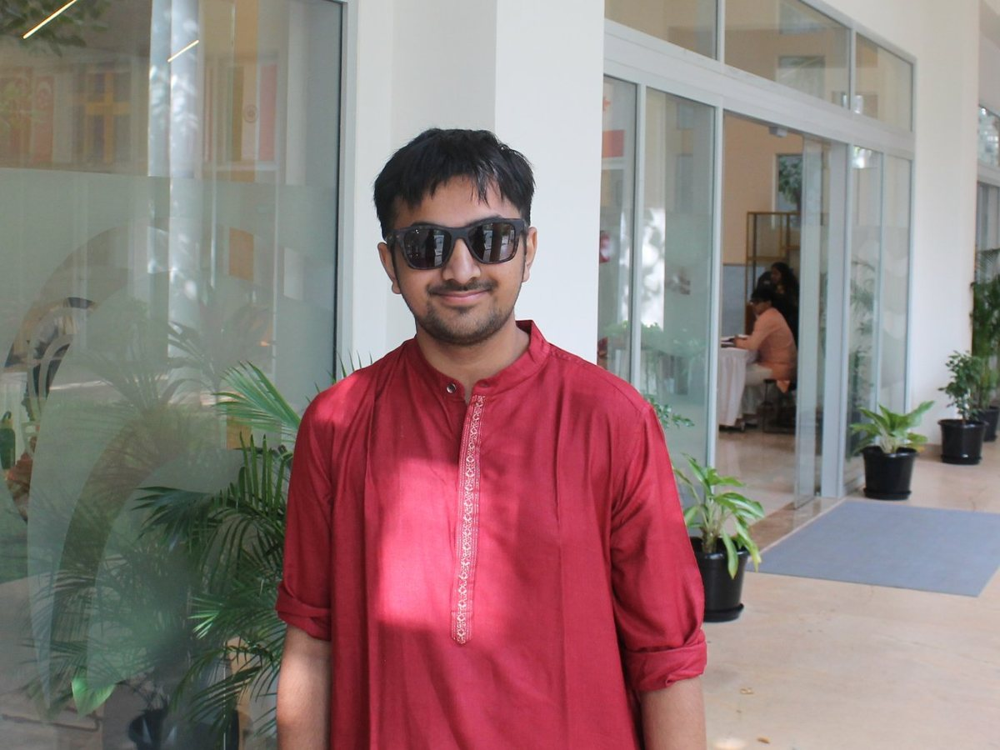

N · NEUTRAL · ABOUT ME
Hi, I'm Yashvardhan.
I'm a student at Vidyashilp Academy in Bangalore, and I build things to find out how they work. This whole page runs on the gearbox I made for physics. Shift into first to see where it started.
Away from the workbench, I spent two years as head of social media for Steps for Smiles, a charity event raising money for children with cancer.
BASED IN
Bangalore, India
SCHOOL
Vidyashilp Academy
LEADERSHIP
Head of social media, Steps for Smiles
